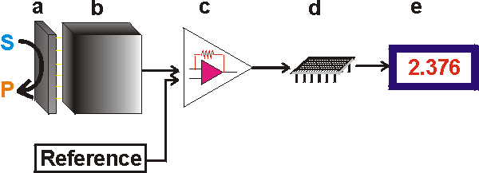

Enzyme Technology
What are biosensors?
A biosensor is an analytical device which converts a
biological response into an electrical signal (Figure 6.1). The term 'biosensor'
is often used to cover sensor devices used in order to determine the
concentration of substances and other parameters of biological interest even
where they do not utilise a biological system directly. This very broad
definition is used by some scientific journals (e.g., Biosensors, Elsevier Applied
Science) but will not be applied to the coverage here. The emphasis of this
Chapter concerns enzymes as the biologically responsive material, but it should
be recognised that other biological systems may be utilised by biosensors, for
example, whole cell metabolism, ligand binding and the antibody-antigen
reaction. Biosensors represent a rapidly expanding field, at the present time,
with an estimated 60% annual growth rate; the major impetus coming from the
health-care industry (e.g., 6% of the western world are diabetic and would benefit
from the availability of a rapid, accurate and simple biosensor for glucose) but
with some pressure from other areas, such as food quality appraisal and
environmental monitoring. The estimated world analytical market is about
£12,000,000,000 year−1 of which 30% is in the health care
area. There is clearly a vast market expansion potential as less than 0.1% of
this market is currently using biosensors. Research and development in this
field is wide and multidisciplinary, spanning biochemistry, bioreactor science,
physical chemistry, electrochemistry, electronics and software engineering. Most
of this current endeavour concerns potentiometric and amperometric biosensors
and colorimetric paper enzyme strips. However, all the main transducer types are
likely to be thoroughly examined, for use in biosensors, over the next few
years.
A successful biosensor must possess at least some of the following
beneficial features:
-
The biocatalyst must be highly specific for the
purpose of the analyses, be stable under normal storage conditions and, except
in the case of colorimetric enzyme strips and dipsticks (see later), show good
stability over a large number of assays (i.e., much greater than 100).
-
The
reaction should be as independent of such physical parameters as stirring, pH
and temperature as is manageable. This would allow the analysis of samples with
minimal pre-treatment. If the reaction involves cofactors or coenzymes these
should, preferably, also be co-immobilised with the enzyme (see Chapter
8).
-
The response should be accurate, precise, reproducible and linear
over the useful analytical range, without dilution or concentration. It should
also be free from electrical noise.
-
If the biosensor is to be used for
invasive monitoring in clinical situations, the probe must be tiny and
biocompatible, having no toxic or antigenic effects. If it is to be used in
fermenters it should be sterilisable. This is preferably performed by
autoclaving but no biosensor enzymes can presently withstand such drastic
wet-heat treatment. In either case, the biosensor should not be prone to fouling
or proteolysis.
-
The complete biosensor should be cheap, small, portable
and capable of being used by semi-skilled operators.
-
There should be a
market for the biosensor. There is clearly little purpose developing a biosensor
if other factors (e.g., government subsidies, the continued employment of skilled
analysts, or poor customer perception) encourage the use of traditional methods
and discourage the decentralisation of laboratory testing.
The biological
response of the biosensor is determined by the biocatalytic membrane which
accomplishes the conversion of reactant to product. Immobilised enzymes possess
a number of advantageous features which makes them particularly applicable for
use in such systems. They may be re-used, which ensures that the same catalytic
activity is present for a series of analyses. This is an important factor in
securing reproducible results and avoids the pitfalls associated with the
replicate pipetting of free enzyme otherwise necessary in analytical protocols.
Many enzymes are intrinsically stabilised by the immobilisation process (see
Chapter 3), but even where this does not occur there is usually considerable
apparent stabilisation. It is normal to use an excess of the enzyme within the
immobilised sensor system. This gives a catalytic redundancy (i.e., h
<< 1) which is sufficient to ensure an increase in the apparent
stabilisation of the immobilised enzyme (see, for example, Figures
3.11, 3.19
and 5.8). Even where there is some inactivation of the immobilised enzyme over a
period of time, this inactivation is usually steady and predictable. Any
activity decay is easily incorporated into an analytical scheme by regularly
interpolating standards between the analyses of unknown samples. For these
reasons, many such immobilised enzyme systems are re-usable up to 10,000 times
over a period of several months. Clearly, this results in a considerable saving
in terms of the enzymes' cost relative to the analytical usage of free soluble
enzymes.
When the reaction, occurring at the immobilised enzyme membrane of a
biosensor, is limited by the rate of external diffusion, the reaction process
will possess a number of valuable analytical assets. In particular, it will obey
the relationship shown in equation 3.27. It follows that the biocatalyst gives a
proportional change in reaction rate in response to the reactant (substrate)
concentration over a substantial linear range, several times the intrinsic
Km (see Figure 3.12 line e). This is very useful as analyte
concentrations are often approximately equal to the Kms of their
appropriate enzymes which is roughly 10 times more concentrated than can be
normally determined, without dilution, by use of the free enzyme in solution.
Also following from equation 3.27 is the independence of the reaction rate with
respect to pH, ionic strength, temperature and inhibitors. This simply avoids
the tricky problems often encountered due to the variability of real analytical
samples (e.g, fermentation broth, blood and urine) and external conditions.
Control of biosensor response by the external diffusion of the analyte can be
encouraged by the use of permeable membranes between the enzyme and the bulk
solution. The thickness of these can be varied with associated effects on the
proportionality constant between the substrate concentration and the rate of
reaction (i.e., increasing membrane thickness increases the unstirred layer
(d) which, in turn, decreases the proportionality constant,
kL, in equation 3.27). Even if total dependence on the external
diffusional rate is not achieved (or achievable), any increase in the dependence
of the reaction rate on external or internal diffusion will cause a reduction in
the dependence on the pH, ionic strength, temperature and inhibitor
concentrations.

Figure 6.1. Schematic diagram showing the main components of a biosensor. The
biocatalyst (a) converts the substrate to product. This reaction is determined
by the transducer (b) which converts it to an electrical signal. The output from
the transducer is amplified (c), processed (d) and displayed (e).
The key part of a biosensor is the
transducer (shown as the 'black box' in Figure 6.1) which makes use of a
physical change accompanying the reaction. This may be
-
the heat output (or
absorbed) by the reaction (calorimetric biosensors),
-
changes in the
distribution of charges causing an electrical potential to be produced (potentiometric
biosensors),
-
movement of electrons produced in a redox reaction
(amperometric biosensors),
-
light output during the reaction or a light
absorbance difference between the reactants and products (optical biosensors),
or
-
effects due to the mass of the reactants or products (piezo-electric
biosensors).
There are three so-called 'generations' of biosensors;
First generation biosensors where the normal product of the reaction diffuses to the
transducer and causes the electrical response, second generation
biosensors which involve specific 'mediators' between the reaction and the
transducer in order to generate improved response, and third generation
biosensors where the reaction itself causes the response and no product or
mediator diffusion is directly involved.
The electrical signal from the
transducer is often low and superimposed upon a relatively high and noisy (i.e., containing a high frequency signal component of an apparently random nature, due
to electrical interference or generated within the electronic components of the
transducer) baseline. The signal processing normally involves subtracting a
'reference' baseline signal, derived from a similar transducer without any
biocatalytic membrane, from the sample signal, amplifying the resultant signal
difference and electronically filtering (smoothing) out the unwanted signal
noise. The relatively slow nature of the biosensor response considerably eases
the problem of electrical noise filtration. The analogue signal produced at this
stage may be output directly but is usually converted to a digital signal and
passed to a microprocessor stage where the data is processed, converted to
concentration units and output to a display device or data
store.
Home
| Back | Next
This page was established in 2004 and last updated by Martin
Chaplin
on
6 August, 2014
|